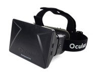
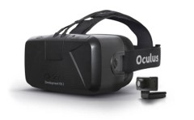

 
On August 1st of 2012, Oculus launched their Kickstarter campaign. For a company with such ambitious (if newfound) plans — to revive an entire genre, to succeed where so many had failed only a decade ago — they had a rather modest campaign goal: $250,000. That’s less than some of those 90’s VR headsets from Palmer’s collection cost when they flopped onto the market.
Within 24 hours, they’d raised $670,000 from 2,750 people. Within three days, they’d broken a million dollars.
(For reference: Around the time the Kickstarter ended, Oculus had 10 employees. By the time they sold to Facebook, they were at 100.)
Now, they weren’t using Kickstarter to pitch some incredibly polished, perfectly refined virtual reality headset that they’d somehow conjured out of thin air. This was something… else. Something rougher. It was much, much prettier than that old duct-tape-tastic E3 prototype, mind you — but, with relatively weak specs and a chunky design, it wasn’t something they meant to sit on store shelves.
Instead, this first release was meant for developers and early adopters to get their feet wet with VR. To cleanse the palate of any bad taste left by the headsets of yesteryear. To get people building things in VR. This dev kit (or Oculus Rift DK1, as it came to be known) gave most people their first glimpse at Oculus’ potential, and it made one thing clear: this little $350 dollar headset was already better than everything that came before it. But it wasn’t perfect.
Its low resolution screen (combined with magnification lenses that helped wrap the image around your view) made even the most beautifully rendered 3D environment look dated. It was like you were sitting too close to an old TV, or staring at the display through a screen door (aptly, this shortcoming quickly came to be known as “the screen door effect”)
This initial headset also lacked a feature that only really seems important once you notice it’s not there: positional tracking. While the headset’s sensors could keep tabs of how your head was angled (are you looking up? Down? Turned to the left?), it had absolutely no idea where your head was from moment to moment. You could look down at an object — but if you tried to lean in for a closer view, your in-game character did nothing. Bam! Immersion shattered.
Meanwhile, complaints of the headset causing motion sickness weren’t rare. That low-res screen, the early software, the lack of positional tracking — it all swirled together into something that managed to make some people’s inner-ears flip out and their stomaches turn.
Despite the flaws, Oculus managed to sell every last one of these headsets that they could make. They’d sourced enough components to make around 65,000 units of this first iteration — on February 21st of 2014, they officially sold out.
Could they have made more? Yes. But that would mean taking the time to source components for a now out-of-date product, as they were just weeks away from the debut of… (Look Right)